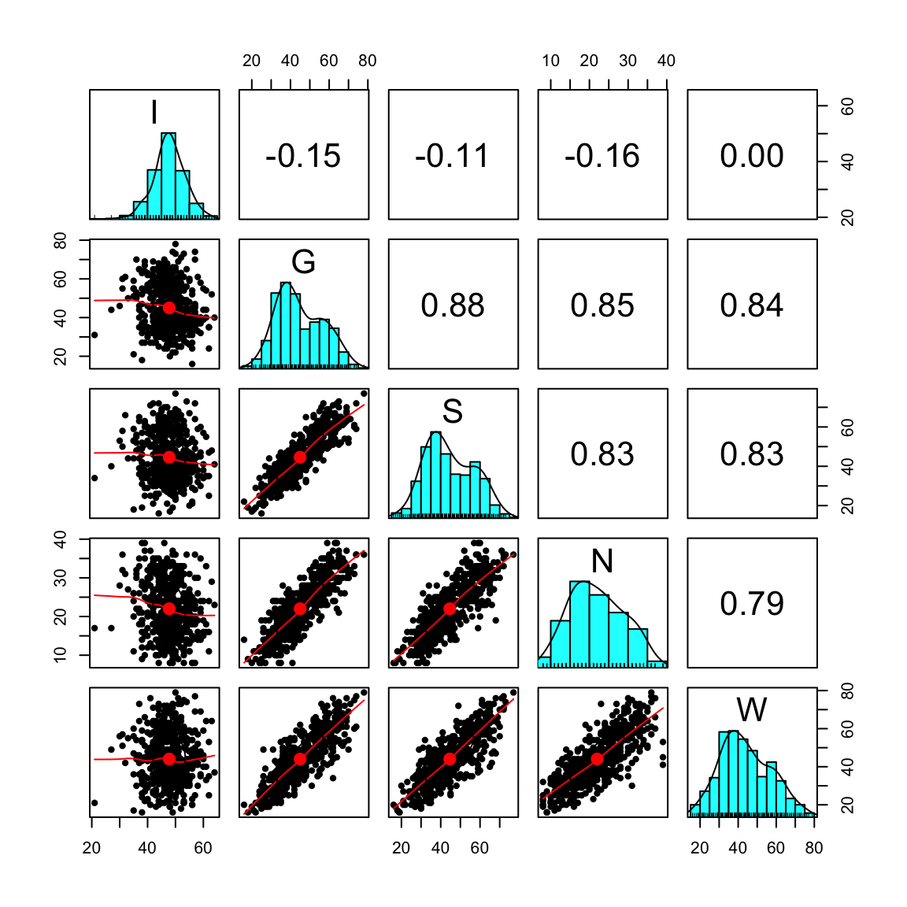

here::here("code", "_common.R") |>
source()
if (!requireNamespace("pacman")) install.packages("pacman")
pacman::p_load(lavaan, semPlot, tidyr, ggdag, dagitty)21 Il modello statistico dell’analisi fattoriale
In questo capitolo imparerai a
- Comprendere il modello statistico monofattoriale.
- Eseguire l’analisi statistica per il modello monofattoriale con
lavaan.
Prerequisiti
- Leggere il capitolo 6, Factor Analysis and Principal Component Analysis, del testo Principles of psychological assessment di Petersen (2024).
Preparazione del Notebook
21.1 Modello monofattoriale
L’analisi fattoriale esplorativa (AFE) parte da una matrice di dimensioni \(p \times p\) (dove \(p\) è il numero di variabili osservate) che contiene i coefficienti di correlazione (o, in alternativa, di covarianza) fra tali variabili. L’obiettivo dell’AFE è ottenere una matrice di dimensioni \(p \times k\) (dove \(k\) è il numero di fattori comuni) i cui elementi – chiamati saturazioni fattoriali – descrivono la relazione tra ciascun fattore comune e ogni variabile osservata.
Nel caso più semplice, quello monofattoriale, si ipotizza l’esistenza di un unico fattore latente, \(\xi\). In presenza di \(p\) variabili manifeste \(Y_i\), il modello matematico di un solo fattore comune si può esprimere nel modo seguente:
\[ Y_i = \mu_i + \lambda_{i} \,\xi + \delta_i , \quad\text{per}\quad i=1, \dots, p, \tag{21.1}\]
dove:
- \(\xi\) è il fattore comune (o fattore latente), condiviso da tutte le variabili \(Y_i\);
- \(\delta_i\) è il fattore specifico (o fattore unico) associato alla \(i\)-esima variabile osservata, cioè una componente di varianza che non è condivisa con le altre variabili;
- \(\lambda_i\) è la saturazione fattoriale (o peso) della \(i\)-esima variabile, ossia il coefficiente che quantifica il peso esercitato dal fattore comune \(\xi\) su \(Y_i\).
Per semplificare l’analisi, si assume spesso che \(\mu_i = 0\), considerando le \(Y_i\) già centrate (cioè prive della loro media). Questa convenzione rende possibile riscrivere il modello come:
\[ Y_i = \lambda_i \,\xi + \delta_i. \tag{21.2}\]
In aggiunta a questa ipotesi di centratura, si stabilisce che:
- il fattore comune \(\xi\) abbia media nulla, \(\mathbb{E}(\xi) = 0\), e varianza unitaria, \(\mathbb{V}(\xi) = 1\);
- i fattori specifici \(\delta_i\) abbiano media nulla, \(\mathbb{E}(\delta_i)=0\), e varianza \(\psi_i\), cioè \(\mathbb{V}(\delta_i) = \psi_i\);
- i fattori specifici siano tra loro incorrelati: \(\mathbb{E}(\delta_i \,\delta_k) = 0\) per \(i \neq k\);
- i fattori specifici siano incorrelati con il fattore comune: \(\mathbb{E}(\delta_i\,\xi) = 0\) per ogni \(i\).
Date queste ipotesi, l’interdipendenza (cioè le correlazioni) fra le variabili osservate \(Y_i\) e \(Y_k\) è interamente spiegata dal singolo fattore comune \(\xi\). I termini \(\delta_i\) riguardano solo la varianza non condivisa di ciascuna variabile.
Sulla base di queste assunzioni, è possibile:
- calcolare la covarianza tra \(Y_i\) e il fattore comune \(\xi\);
- determinare la varianza di ciascuna variabile \(Y_i\);
- ottenere la covarianza tra due variabili manifeste \(Y_i\) e \(Y_k\).
Tali derivazioni consentono di comprendere a fondo come il fattore latente \(\xi\) contribuisca a spiegare le relazioni fra le variabili osservate e quanta parte della varianza di ciascuna variabile sia invece imputabile a fattori specifici (non condivisi). Questo concetto è alla base di tutte le procedure di stima e di interpretazione nell’analisi fattoriale esplorativa con un solo fattore.
21.2 Covarianza tra un indicatore e il fattore comune
Nel modello monofattoriale, vogliamo determinare la covarianza teorica tra una variabile manifesta \(Y_i\) e il fattore comune \(\xi\). La definizione di covarianza è:
\[ \mathrm{Cov}(Y_i, \xi) = \mathbb{E}(Y_i \, \xi) - \mathbb{E}(Y_i)\,\mathbb{E}(\xi). \]
Poiché per semplicità assumiamo \(\mathbb{E}(\xi) = 0\), la formula si riduce a:
\[ \mathrm{Cov}(Y_i, \xi) = \mathbb{E}(Y_i \,\xi). \]
Usando il modello monofattoriale \(Y_i = \lambda_i \xi + \delta_i\), si ottiene:
\[ \mathrm{Cov}(Y_i, \xi) = \mathbb{E}\bigl((\lambda_i \,\xi + \delta_i)\xi\bigr) = \mathbb{E}(\lambda_i\,\xi^2 + \delta_i\,\xi). \]
Il termine \(\lambda_i\) è una costante (la saturazione fattoriale), perciò si può portare fuori dall’aspettazione:
\[ = \lambda_i \,\mathbb{E}(\xi^2) + \mathbb{E}(\delta_i \,\xi). \]
A questo punto, valgono due ipotesi fondamentali:
- \(\mathbb{E}(\xi^2) = \mathbb{V}(\xi) = 1\), cioè il fattore comune ha varianza unitaria.
- \(\mathrm{Cov}(\delta_i,\xi) = \mathbb{E}(\delta_i \,\xi) = 0\), poiché il fattore specifico \(\delta_i\) è incorrelato con il fattore comune \(\xi\).
Applicando queste ipotesi si ha:
\[ \mathrm{Cov}(Y_i, \xi) = \lambda_i \cdot 1 + 0 = \lambda_i. \]
In sintesi: in un modello a singolo fattore, la saturazione \(\lambda_i\) coincide con la covarianza tra la variabile manifesta \(Y_i\) e il fattore comune \(\xi\). Inoltre, se ogni variabile \(Y_i\) è stata standardizzata, ossia ha varianza pari a 1, allora \(\lambda_i = \mathrm{Corr}(Y_i,\xi)\). In tal caso, \(\lambda_i\) esprime direttamente la correlazione tra la variabile \(Y_i\) e il fattore comune \(\xi\).
21.3 Espressione fattoriale della varianza
Sotto l’ipotesi che \(\mathbb{E}(Y_i) = 0\), la varianza di \(Y_i\) è:
\[ \mathbb{V}(Y_i) = \mathbb{E}(Y_i^2) - [\mathbb{E}(Y_i)]^2 = \mathbb{E}(Y_i^2). \]
Usando di nuovo il modello monofattoriale \(Y_i = \lambda_i \xi + \delta_i\):
\[ \mathbb{V}(Y_i) = \mathbb{E}\bigl((\lambda_i \,\xi + \delta_i)^2\bigr). \]
Sviluppando il quadrato:
\[ = \mathbb{E}\bigl(\lambda_i^2 \,\xi^2 + 2\,\lambda_i\,\xi\,\delta_i + \delta_i^2\bigr). \]
Distinguiamo i tre termini all’interno dell’aspettazione:
- \(\mathbb{E}(\lambda_i^2 \,\xi^2) = \lambda_i^2 \,\mathbb{E}(\xi^2)\) poiché \(\lambda_i^2\) è costante e \(\mathbb{E}(\xi^2) = \mathbb{V}(\xi) = 1\). Pertanto questo termine diventa \(\lambda_i^2\).
- \(\mathbb{E}(2\,\lambda_i\,\xi\,\delta_i) = 2\,\lambda_i\,\mathbb{E}(\xi\,\delta_i)\). Ma \(\mathrm{Cov}(\xi, \delta_i) = 0\), dunque \(\mathbb{E}(\xi\,\delta_i) = 0\). Di conseguenza questo termine è nullo.
- \(\mathbb{E}(\delta_i^2) = \mathbb{V}(\delta_i) = \psi_i\), dato che il fattore specifico \(\delta_i\) ha varianza \(\psi_i\).
Mettendo insieme questi risultati, otteniamo:
\[ \mathbb{V}(Y_i) = \lambda_i^2 + \psi_i. \]
- \(\lambda_i^2\) è detta comunalità della variabile \(Y_i\) e indica la parte di varianza spiegata dal fattore comune \(\xi\).
- \(\psi_i\) rappresenta la parte di varianza non spiegata dal fattore comune, detta unicità di \(Y_i\).
Nel caso in cui le \(Y_i\) siano state standardizzate (quindi abbiano \(\mathbb{V}(Y_i) = 1\)), si ottiene:
\[ 1 = \lambda_i^2 + \psi_i, \]
da cui
\[ \psi_i = 1 - \lambda_i^2. \]
In questo scenario, la comunalità \(\lambda_i^2\) indica esattamente la percentuale di varianza di \(Y_i\) spiegata dal fattore comune, mentre \(\psi_i\) indica la percentuale rimanente, legata a fattori specifici o ad altri errori di misura.
In sintesi, la varianza di una variabile osservata \(Y_i\) può essere scomposta in:
- \(\lambda_i^2\), la parte comune che la variabile condivide con tutte le altre (ossia la porzione di varianza attribuibile al fattore comune \(\xi\), chiamata comunalità);
- \(\psi_i\), la parte specifica o residua, non spiegata dal fattore comune (chiamata unicità).
Nei modelli fattoriali, l’obiettivo principale è proprio stimare correttamente \(\lambda_i\) e \(\psi_i\) per capire in che misura un fattore latente unico (\(\xi\)) spiega le relazioni tra le diverse variabili manifeste \(Y_1, Y_2, \dots, Y_p\).
Esempio 21.1 Riprendiamo l’analisi della matrice di correlazioni di Spearman.
Spearman <- matrix(c(
1.0, .78, .70, .66,
.78, 1.0, .64, .54,
.70, .64, 1.0, .45,
.66, .54, .45, 1.0
),
byrow = TRUE, ncol = 4
)
rownames(Spearman) <- c("C", "E", "M", "P")
colnames(Spearman) <- c("C", "E", "M", "P")
Spearman |>
print()
#> C E M P
#> C 1.00 0.78 0.70 0.66
#> E 0.78 1.00 0.64 0.54
#> M 0.70 0.64 1.00 0.45
#> P 0.66 0.54 0.45 1.00Quando eseguiamo una analisi fattoriale con la funzione factanal(), nello stesso output compare la quantità denominata SS loadings.
fm <- factanal(covmat = Spearman, factors = 1)
fm
#>
#> Call:
#> factanal(factors = 1, covmat = Spearman)
#>
#> Uniquenesses:
#> C E M P
#> 0.086 0.329 0.460 0.539
#>
#> Loadings:
#> Factor1
#> C 0.956
#> E 0.819
#> M 0.735
#> P 0.679
#>
#> Factor1
#> SS loadings 2.587
#> Proportion Var 0.647
#>
#> The degrees of freedom for the model is 2 and the fit was 0.023Questa quantità indica quanta parte della varianza totale delle quattro variabili manifeste è spiegata dal fattore comune.
Ricordiamo che, per varianza totale in statistica multivariata, si intende la somma delle varianze delle variabili osservate (cioè la traccia della matrice di covarianza). Se le variabili sono standardizzate, ciascuna contribuisce con 1 alla varianza complessiva, quindi, con quattro variabili, la varianza totale risulta 4.
La quota della varianza totale spiegata dal modello fattoriale a un fattore è data dalla somma delle comunalità di ogni variabile, ossia dalle saturazioni fattoriali (loadings) al quadrato, sommate tra loro. Nell’esempio, il valore ottenuto è 2.587; perciò la proporzione di varianza spiegata è
\[ \frac{2.587}{4} \approx 0.647, \]
che factanal() riporta come Proportion Var.
La parte di varianza di ciascuna variabile non spiegata dal fattore comune prende il nome di unicità (in inglese uniqueness). Nel risultato di factanal(), l’unicità di ogni variabile si ottiene con fm$uniqueness. La comunalità (ovvero la quota di varianza spiegata dal fattore comune) si ricava da 1 - fm$uniqueness, oppure calcolando direttamente il quadrato di ogni saturazione fattoriale.
Eseguendo il prodotto interno t(L) %*% L, infatti, si ottiene la somma dei quadrati delle saturazioni (le cosiddette squared loadings), che fornisce la comunalità totale spiegata dal fattore per l’insieme delle variabili.
21.4 Covarianza tra due variabili manifeste
Consideriamo due variabili manifeste \(Y_i\) e \(Y_k\) con media nulla, ossia \(\mathbb{E}(Y_i) = \mathbb{E}(Y_k) = 0\). In questa ipotesi, la loro covarianza è data da:
\[ \mathrm{Cov}(Y_i, Y_k) = \mathbb{E}(Y_i \, Y_k) - \mathbb{E}(Y_i)\,\mathbb{E}(Y_k) = \mathbb{E}(Y_i \, Y_k). \]
Nel modello monofattoriale, ogni variabile si esprime come \(Y_i = \lambda_i \,\xi + \delta_i\), dove \(\xi\) è il fattore comune e \(\delta_i\) è il fattore specifico. Sostituendo queste espressioni nella formula della covarianza, otteniamo:
\[ \mathrm{Cov}(Y_i, Y_k) = \mathbb{E}\bigl((\lambda_i \,\xi + \delta_i) (\lambda_k \,\xi + \delta_k)\bigr). \]
Espandendo il prodotto dentro l’aspettazione:
\[ = \mathbb{E}\bigl(\lambda_i\,\lambda_k \,\xi^2 + \lambda_i\,\xi\,\delta_k + \lambda_k\,\delta_i\,\xi + \delta_i\,\delta_k\bigr). \]
A questo punto, si applicano le ipotesi del modello:
- \(\mathbb{E}(\xi^2) = \mathbb{V}(\xi) = 1\).
- \(\mathrm{Cov}(\xi, \delta_i) = 0\), dunque \(\mathbb{E}(\xi \,\delta_i) = 0\).
- \(\mathrm{Cov}(\delta_i, \delta_k) = 0\), cioè \(\mathbb{E}(\delta_i \,\delta_k) = 0\).
Applicandole ai termini sopra, abbiamo:
\[ \mathrm{Cov}(Y_i, Y_k) = \lambda_i\,\lambda_k\,\underbrace{\mathbb{E}(\xi^2)}_{=1} + \lambda_i \,\underbrace{\mathbb{E}(\xi\,\delta_k)}_{=0} + \lambda_k \,\underbrace{\mathbb{E}(\delta_i\,\xi)}_{=0} + \underbrace{\mathbb{E}(\delta_i\,\delta_k)}_{=0} = \lambda_i \,\lambda_k. \]
In sintesi, in un modello a singolo fattore, la covarianza tra due variabili manifeste \(Y_i\) e \(Y_k\) è interamente spiegata dal fattore comune \(\xi\) e risulta pari al prodotto delle rispettive saturazioni fattoriali \(\lambda_i\) e \(\lambda_k\).
21.5 Correlazioni osservate e correlazioni riprodotte dal modello
Nel modello monofattoriale, l’ipotesi di base è che il fattore comune spieghi tutta la covarianza tra le variabili osservate. In altre parole, ci aspettiamo che, una volta noto il valore del fattore comune \(\xi\), ogni variabile \(Y_i\) sia incorrelata con le altre \((Y_k)\). Formalmente, ciò si traduce nell’uguaglianza:
\[ \mathrm{Cov}(Y_i, Y_k \,\mid\, \xi) = 0 \quad\text{per}\quad i \neq k. \]
Se questa condizione risulta soddisfatta, il modello monofattoriale riproduce correttamente le correlazioni osservate fra le variabili. Con il termine \(\boldsymbol{\Sigma}\) si indica la matrice di correlazioni riprodotte dal modello, che in forma matriciale si esprime come:
\[ \boldsymbol{\Sigma} = \boldsymbol{\Lambda}\,\boldsymbol{\Lambda}^{\prime} + \boldsymbol{\Psi}, \]
dove \(\boldsymbol{\Lambda}\) è la matrice delle saturazioni fattoriali (loadings) e \(\boldsymbol{\Psi}\) è la matrice delle unicità (cioè le varianze specifiche non spiegate dal fattore comune).
Il modello monofattoriale si considera adeguato se la differenza tra la matrice di correlazioni empiricamente osservate e la matrice \(\boldsymbol{\Sigma}\) prodotta dal modello risulta trascurabile. Quando tale differenza (chiamata spesso misura di scostamento o misfit) è prossima allo zero, possiamo concludere che il fattore comune riesce a spiegare in modo soddisfacente i rapporti di correlazione tra le variabili del nostro insieme di dati.
Esempio 21.2 Per i dati di Spearman, le correlazioni riprodotte dal modello ad un fattore sono
La matrice delle differenze tra le correlazioni campionarie e quelle riprodotte è
Lo scarto maggiore tra le correlazioni campionarie e quelle riprodotte è uguale a 0.049. Si può dunque concludere che il modello monofattoriale spiega in maniera ragionevole i dati di Spearman.
21.6 Bontà di adattamento del modello ai dati
Un aspetto fondamentale nell’analisi fattoriale è valutare se la matrice di correlazioni (o covarianze) prevista dal modello rispecchia adeguatamente i dati empirici. A tal scopo, si conduce un test statistico che confronta la matrice di correlazioni/covarianze osservata con quella predetta dal modello fattoriale.
21.6.1 L’ipotesi nulla del test
L’ipotesi nulla (\(H_0\)) afferma che le differenze tra le correlazioni osservate e quelle riprodotte dal modello siano dovute soltanto agli errori di campionamento. In altre parole, il modello è considerato “corretto” a livello di popolazione, ossia \(\boldsymbol{\Sigma}(\theta) = \boldsymbol{\Sigma}\), dove:
- \(\boldsymbol{\Sigma}\) è la matrice di correlazioni (o covarianze) nella popolazione;
- \(\boldsymbol{\Sigma}(\theta)\) è la matrice di correlazioni (o covarianze) riprodotta dal modello in base ai parametri \(\theta\).
21.6.2 La statistica \(\chi^2\)
La statistica usata per il test, indicata come \(v\) (o più comunemente \(\chi^2\)), è funzione della differenza tra \(\boldsymbol{S}\) (la matrice osservata) e \(\boldsymbol{S}(\theta)\) (la matrice riprodotta dal modello):
\[ v = f\bigl[\boldsymbol{S}(\theta) - \boldsymbol{S}\bigr]. \tag{21.3}\]
Quando l’ipotesi nulla è vera (cioè la discrepanza tra le due matrici è solo casuale), \(v\) si distribuisce approssimativamente come una \(\chi^2\) con \(\nu\) gradi di libertà, dove
\[ \nu = \frac{p(p+1)}{2} \;-\; q. \tag{21.4}\]
- \(p\) è il numero di variabili manifeste;
- \(q\) è il numero di parametri stimati dal modello (ad esempio, \(\lambda\) e \(\psi\) nel modello monofattoriale).
Il valore di \(v\) è tanto maggiore quanto più le correlazioni/covarianze previste dal modello differiscono da quelle effettivamente osservate. Se \(v=0\), i parametri del modello ricostruiscono esattamente la matrice di correlazioni della popolazione.
21.6.3 Interpretazione del test
Il test \(\chi^2\) di adattamento del modello fattoriale segue la logica inversa rispetto ai test più comuni (dove un risultato significativo indica evidenza per l’ipotesi alternativa):
- se il test non è significativo (es., \(p\geq 0{,}05\)), non si può escludere che la discrepanza tra matrice osservata e matrice stimata sia dovuta al caso: in tal caso, il modello è considerato adeguato;
- al contrario, un risultato significativo (es., \(p < 0{,}05\)) indica che la differenza non si spiega solo con l’errore di campionamento e che il modello presenta carenze di adattamento ai dati.
21.6.4 Assunzioni e limiti
- Normalità multivariata: il test \(\chi^2\) richiede che le variabili siano distribuite (almeno approssimativamente) come un campione casuale tratto da una distribuzione normale multivariata. Nella pratica, non sempre questa condizione è soddisfatta.
- Dimensioni campionarie: la statistica \(\chi^2\) è sensibile al numero di osservazioni. Con campioni di grandi dimensioni, anche piccole discrepanze tra il modello e i dati tendono a produrre risultati statisticamente significativi, suggerendo un falso cattivo adattamento.
Per questi motivi, la bontà di adattamento del modello non si giudica solo in base alla significatività del test \(\chi^2\). Un criterio alternativo è ad esempio valutare il rapporto \(\chi^2/\nu\), dove \(\nu\) sono i gradi di libertà del test. Valori di \(\chi^2/\nu \leq 3\) (o talvolta \(\leq 4\)) sono spesso considerati indicativi di un adattamento accettabile. Inoltre, in letteratura esistono molti altri indici (fit indices) che completano la valutazione della bontà di adattamento del modello fattoriale.
21.7 L’errore standard della misurazione nel modello fattoriale
In questa sezione, mostriamo come il concetto di errore standard di misurazione, tipico della CTT, possa essere reinterpretato tramite il modello fattoriale.
21.7.1 Collegamento tra CTT e analisi fattoriale
Secondo la CTT, il punteggio osservato \(X\) di un test si scompone in due parti:
\[ X = T + E, \]
dove:
- \(T\) è il valore vero del soggetto,
- \(E\) è l’errore di misurazione, considerato una variabile casuale con media zero, indipendente da \(T\).
Se consideriamo un modello fattoriale monofattoriale con \(p\) item (variabili osservate), la relazione che descrive ciascun item \(j\) per il soggetto \(i\) è:
\[ Y_{ji} = \lambda_j \,\xi_i + \delta_{ji}, \]
dove:
- \(Y_{ji}\) è il punteggio osservato nell’item \(j\),
- \(\xi_i\) è il fattore comune (latente) per il soggetto \(i\),
- \(\lambda_j\) è il carico fattoriale dell’item \(j\) sul fattore \(\xi\),
- \(\delta_{ji}\) è l’errore unico (o fattore specifico) relativo all’item \(j\).
Il punteggio totale \(X_i\) del soggetto \(i\) si ottiene sommando i punteggi dei singoli item:
\[ X_i = \sum_{j=1}^p Y_{ji} = \sum_{j=1}^p (\lambda_j \,\xi_i + \delta_{ji}) = \biggl(\sum_{j=1}^p \lambda_j\biggr)\,\xi_i + \sum_{j=1}^p \delta_{ji}. \]
Notiamo che questa formula rispecchia la struttura della CTT (McDonald, 2013):
\[ X_i = T_i + E_i, \]
dove il valore vero \(T_i\) è \(\bigl(\sum_{j=1}^p \lambda_j\bigr)\,\xi_i\) (la parte del punteggio dovuta al fattore comune) e l’errore \(E_i\) è \(\sum_{j=1}^p \delta_{ji}\) (la somma degli errori unici).
21.7.2 Decomposizione della varianza
Nella CTT, la varianza del punteggio osservato \(\sigma^2_{X_i}\) si scompone nella varianza del valore vero (\(\sigma^2_{T_i}\)) e nella varianza dell’errore (\(\sigma^2_{E_i}\)):
\[ \sigma^2_{X_i} = \sigma^2_{T_i} + \sigma^2_{E_i}. \]
All’interno del modello fattoriale, la varianza del valore vero (\(\sigma^2_{T_i}\)) corrisponde alla varianza del termine \(\bigl(\sum_{j=1}^p \lambda_j\bigr)\,\xi_i\). Poiché \(\xi_i\) ha varianza unitaria (\(\mathbb{V}(\xi_i)=1\)), si ha:
\[ \sigma^2_{T_i} = \mathbb{V}\Biggl[\biggl(\sum_{j=1}^p \lambda_j\biggr)\,\xi_i\Biggr] = \biggl(\sum_{j=1}^p \lambda_j\biggr)^2 \,\mathbb{V}(\xi_i) = \biggl(\sum_{j=1}^p \lambda_j\biggr)^2. \]
La varianza dell’errore (\(\sigma^2_{E_i}\)), invece, è la varianza della somma degli errori unici \(\sum_{j=1}^p \delta_{ji}\). Nel modello fattoriale, si assume che gli errori \(\delta_{ji}\) siano incorrelati tra loro, per cui:
\[ \sigma^2_{E_i} = \mathbb{V}\Biggl(\sum_{j=1}^p \delta_{ji}\Biggr) = \sum_{j=1}^p \mathbb{V}(\delta_{ji}) = \sum_{j=1}^p \Psi_j, \]
dove \(\Psi_j\) è la varianza (unicità) associata all’errore dell’item \(j\).
21.7.3 Errore standard di misurazione
Nella CTT, l’errore standard di misurazione di un test quantifica, in media, quanto il punteggio osservato può differire dal valore vero \(T_i\). Nel modello fattoriale, l’errore standard di misurazione del punteggio totale è la radice quadrata della somma delle varianze degli errori unici:
\[ \sigma_E = \sqrt{\sigma^2_{E_i}} = \sqrt{\sum_{j=1}^p \Psi_j}. \]
Questo fornisce una visione fattoriale dell’errore di misurazione: la precisione di un test (intesa come minore ampiezza dell’errore) aumenta al diminuire della somma delle unicità dei singoli item.
In sintesi, il modello fattoriale arricchisce il tradizionale concetto di errore standard di misurazione della CTT, mostrando che l’errore (specifico o unico) di ciascun item influisce cumulativamente sulla precisione del punteggio totale. In altre parole, gli item che presentano carichi fattoriali elevati contribuiscono a ridurre l’errore complessivo di misurazione, mentre le loro corrispettive unicità (varianze specifiche non spiegate dal fattore comune) aumentano l’incertezza del punteggio totale. Questo legame tra CTT e analisi fattoriale offre un’ottica ulteriore per comprendere e quantificare la precisione dei test psicometrici.
21.8 Un esempio concreto
Vediamo ora come applicare i concetti del modello monofattoriale e dell’errore standard di misurazione a un caso reale. Utilizzeremo i dati raccolti per la validazione italiana del Cognitive Style Questionnaire – Short Form (CSQ-SF, Meins et al. 2012). Questo questionario, volto a misurare la vulnerabilità all’ansia e alla depressione, comprende cinque sottoscale: Internality (I), Globality (G), Stability (S), Negative consequences (N) e Self-worth (W). Sebbene la sottoscala di Internality risulti problematica, la includiamo nell’analisi per illustrare la procedura completa.
21.8.1 Lettura e ispezione preliminare dei dati
In \(\textsf{R}\), carichiamo il dataset e ne verifichiamo la dimensione (\(n\), numero di partecipanti). Per una prima esplorazione, calcoliamo le statistiche descrittive (psych::describe(...)) e visualizziamo la matrice di correlazione con psych::pairs.panels(...).
csq <- rio::import(here::here("data", "csq540.csv"))
n <- nrow(csq) # Numero di partecipanti
psych::describe(csq, type = 2) # Statistiche descrittive
#> vars n mean sd median trimmed mad min max range skew kurtosis
#> I 1 540 47.76 5.78 48 47.87 4.45 21 64 43 -0.31 1.07
#> G 2 540 45.00 11.94 42 44.55 11.86 16 78 62 0.34 -0.70
#> S 3 540 44.60 12.18 42 44.24 13.34 16 77 61 0.27 -0.77
#> N 4 540 22.01 6.92 21 21.86 7.41 8 39 31 0.21 -0.74
#> W 5 540 44.05 13.10 43 43.66 13.34 16 79 63 0.31 -0.53
#> se
#> I 0.25
#> G 0.51
#> S 0.52
#> N 0.30
#> W 0.56psych::pairs.panels(csq) # Matrice di correlazione
Ne emerge che la sottoscala Internality (I) presenta alcune criticità — aspetto già segnalato in letteratura.
21.8.2 Specifica e stima di un modello unifattoriale
Per analizzare i dati secondo un modello fattoriale a un solo fattore, usiamo la sintassi del pacchetto lavaan:
mod_csq <- "
F =~ NA*I + G + S + N + W
F ~~ 1*F
"
fit <- lavaan:::cfa(mod_csq, data = csq)- Nella prima riga,
F =~ NA*I + G + S + N + Windichiamo che il fattoreFè definito dai cinque item/sottoscale (I, G, S, N, W), con parametroNAper lasciare libera la stima della prima saturazione. - Nella seconda riga,
F ~~ 1*Fimpone varianza unitaria per il fattoreF.
Otteniamo il resoconto completo con:
summary(fit, standardized = TRUE, fit.measures = TRUE)
#> lavaan 0.6-19 ended normally after 26 iterations
#>
#> Estimator ML
#> Optimization method NLMINB
#> Number of model parameters 10
#>
#> Number of observations 540
#>
#> Model Test User Model:
#>
#> Test statistic 46.716
#> Degrees of freedom 5
#> P-value (Chi-square) 0.000
#>
#> Model Test Baseline Model:
#>
#> Test statistic 2361.816
#> Degrees of freedom 10
#> P-value 0.000
#>
#> User Model versus Baseline Model:
#>
#> Comparative Fit Index (CFI) 0.982
#> Tucker-Lewis Index (TLI) 0.965
#>
#> Loglikelihood and Information Criteria:
#>
#> Loglikelihood user model (H0) -8741.781
#> Loglikelihood unrestricted model (H1) -8718.423
#>
#> Akaike (AIC) 17503.562
#> Bayesian (BIC) 17546.478
#> Sample-size adjusted Bayesian (SABIC) 17514.734
#>
#> Root Mean Square Error of Approximation:
#>
#> RMSEA 0.124
#> 90 Percent confidence interval - lower 0.093
#> 90 Percent confidence interval - upper 0.158
#> P-value H_0: RMSEA <= 0.050 0.000
#> P-value H_0: RMSEA >= 0.080 0.989
#>
#> Standardized Root Mean Square Residual:
#>
#> SRMR 0.033
#>
#> Parameter Estimates:
#>
#> Standard errors Standard
#> Information Expected
#> Information saturated (h1) model Structured
#>
#> Latent Variables:
#> Estimate Std.Err z-value P(>|z|) Std.lv Std.all
#> F =~
#> I 0.725 0.253 2.867 0.004 0.725 0.126
#> G -11.322 0.384 -29.481 0.000 -11.322 -0.949
#> S -11.342 0.398 -28.513 0.000 -11.342 -0.932
#> N -6.163 0.233 -26.398 0.000 -6.163 -0.891
#> W -11.598 0.444 -26.137 0.000 -11.598 -0.886
#>
#> Variances:
#> Estimate Std.Err z-value P(>|z|) Std.lv Std.all
#> F 1.000 1.000 1.000
#> .I 32.840 2.000 16.420 0.000 32.840 0.984
#> .G 14.038 1.473 9.532 0.000 14.038 0.099
#> .S 19.508 1.718 11.353 0.000 19.508 0.132
#> .N 9.847 0.725 13.573 0.000 9.847 0.206
#> .W 36.892 2.685 13.737 0.000 36.892 0.215e le stime dei parametri con:
parameterEstimates(fit)
#> lhs op rhs est se z pvalue ci.lower ci.upper
#> 1 F =~ I 0.725 0.253 2.867 0.004 0.229 1.220
#> 2 F =~ G -11.322 0.384 -29.481 0.000 -12.075 -10.569
#> 3 F =~ S -11.342 0.398 -28.513 0.000 -12.122 -10.563
#> 4 F =~ N -6.163 0.233 -26.398 0.000 -6.621 -5.705
#> 5 F =~ W -11.598 0.444 -26.137 0.000 -12.467 -10.728
#> 6 F ~~ F 1.000 0.000 NA NA 1.000 1.000
#> 7 I ~~ I 32.840 2.000 16.420 0.000 28.920 36.759
#> 8 G ~~ G 14.038 1.473 9.532 0.000 11.151 16.924
#> 9 S ~~ S 19.508 1.718 11.353 0.000 16.140 22.876
#> 10 N ~~ N 9.847 0.725 13.573 0.000 8.425 11.269
#> 11 W ~~ W 36.892 2.685 13.737 0.000 31.628 42.155In particolare, ci soffermiamo sulle unicità (varianze specifiche di ciascuna sottoscala), accessibili da:
psi <- parameterEstimates(fit)$est[7:11]
psi
#> [1] 32.840 14.038 19.508 9.847 36.89221.8.3 Stima dell’errore standard di misurazione tramite il modello fattoriale
Nel modello fattoriale monofattoriale, l’errore standard di misurazione di un punteggio totale è la radice quadrata della somma delle varianze specifiche (unicità). Con le stime ottenute da lavaan, basta sommare i valori \(\psi_j\) e prenderne la radice quadrata:
Questo valore rappresenta l’errore standard complessivo del punteggio totale calcolato sui cinque item (sottoscale).
21.8.4 Confronto con la formula della CTT
Ricordiamo la formula classica per l’errore standard di misurazione nella Classical Test Theory (CTT):
\[ \sigma_E = \sigma_X \sqrt{1 - \rho_{XX'}}, \]
dove \(\sigma_X\) è la deviazione standard del punteggio totale e \(\rho_{XX'}\) è l’attendibilità (affidabilità) del test.
-
Calcoliamo il punteggio totale come somma delle sottoscale:
tot_score <- rowSums(csq) -
Otteniamo la deviazione standard di
tot_score:sigma <- sd(tot_score) sigma #> [1] 41.26 -
Stimiamo l’attendibilità \(\rho_{XX'}\) (qui indicata da \(\Omega\)) con la funzione
semTools::reliability()applicata all’oggettofitprodotto dalavaan:rel <- semTools::reliability(fit) rel #> F #> alpha 0.8507 #> omega 0.9330 #> omega2 0.9330 #> omega3 0.9273 #> avevar 0.7917Il valore di \(\Omega\) è tipicamente riportato nella seconda riga di
rel. -
Applichiamo la formula:
sigma * sqrt(1 - rel[2]) #> [1] 10.68
Il valore ottenuto risulta molto simile all’errore standard di misurazione calcolato con la formula di derivazione fattoriale \(\sqrt{\sum_{j=1}^p \Psi_j}\), a conferma della coerenza tra il modello fattoriale e la CTT.
21.8.5 Correlazioni riprodotte dal modello
Per ispezionare come il modello unifattoriale “ricostruisce” le correlazioni tra le variabili, possiamo estrarre:
-
La matrice di correlazione riprodotta:
cor_mat <- lavInspect(fit, "cor.ov") cor_mat #> I G S N W #> I 1.000 #> G -0.119 1.000 #> S -0.117 0.885 1.000 #> N -0.112 0.846 0.830 1.000 #> W -0.111 0.841 0.825 0.789 1.000 -
Le saturazioni fattoriali standardizzate (loadings):
l <- inspect(fit, what="std")$lambda l #> F #> I 0.126 #> G -0.949 #> S -0.932 #> N -0.891 #> W -0.886
Nel modello monofattoriale, la correlazione predetta tra due variabili manifeste (ad esempio I e G) è data dal prodotto delle loro saturazioni. Se l[1] è la saturazione di I e l[2] quella di G, allora:
l[1] * l[2]
#> [1] -0.1192restituisce la correlazione stimata per queste due sottoscale. Per visualizzare la matrice completa delle correlazioni riprodotte dal modello, calcoliamo:
21.8.6 Varianza riprodotta di una variabile
Prendiamo a esempio la variabile \(`W`\) e confrontiamo:
-
La varianza osservata:
var(csq$W) #> [1] 171.7 -
La varianza riprodotta dal modello: somma della varianza spiegata dal fattore e della varianza residua. Poiché il caricamento fattoriale standardizzato per
W(ad esempio-11.598nel caso di non standardizzazione, o un valore \(\lambda_W\) in quello standardizzato) misura l’effetto diFsuW, la parte spiegata è \(\lambda_W^2\). Sommando poi la specificità (residuo), ricostruiamo la varianza totale. Se prendiamo la proporzione di varianza residua rispetto a quella osservata:1 - (l^2 / var(csq$W)) #> F #> I 1.000 #> G 0.995 #> S 0.995 #> N 0.995 #> W 0.995otteniamo un valore simile all’unicità stimata per
W.
Procedendo nello stesso modo per le altre sottoscale (G, I, ecc.) possiamo verificare la corrispondenza fra la varianza empirica e la varianza spiegata dal modello unifattoriale.
In sintesi, questo esempio illustra come, in un modello unifattoriale, sia possibile collegare:
- errori standard di misurazione (CTT) e somme di unicità degli item (analisi fattoriale);
- correlazioni osservate e correlazioni riprodotte dal modello mediante il prodotto dei carichi fattoriali;
- varianza osservata e varianza ricostruita come somma di varianza comune (fattore) e varianza residua (unicità).
La coerenza dei risultati fra CTT e analisi fattoriale ribadisce la loro stretta complementarità nello studio dell’affidabilità e della struttura latente di un test psicometrico.
21.9 Correlazione tra variabili manifeste e fattore comune
Nel modello unifattoriale, la saturazione fattoriale \(\lambda_i\) della variabile manifesta \(Y_i\) corrisponde teoricamente alla correlazione tra \(Y_i\) e il fattore comune \(\xi\). Tuttavia, perché ciò risulti evidente in un’applicazione reale, è necessario poter disporre di una stima dei punteggi fattoriali per ciascun partecipante, cioè i valori (stimati) del fattore comune \(\xi_i\). In \(\textsf{R}\), con lavaan possiamo ricavare i punteggi fattoriali usando la funzione lavPredict(fit).
-
head(lavPredict(fit))mostra le prime righe dei punteggi fattoriali stimati per i soggetti. -
dim(lavPredict(fit))conferma che abbiamo un punteggio per ognuno dei 540 soggetti nel dataset.
Per verificare in concreto la relazione tra \(\lambda_i\) e la correlazione di \(Y_i\) con il fattore comune, calcoliamo la correlazione tra i valori osservati su ciascuna sottoscala del CSQ e le stime dei punteggi fattoriali (ossia \(\hat{\xi}\)):
I risultati ottenuti sono molto simili (ma non necessariamente identici) alle saturazioni fattoriali riportate in:
inspect(fit, what="std")$lambda
#> F
#> I 0.126
#> G -0.949
#> S -0.932
#> N -0.891
#> W -0.886La piccola differenza riscontrata è dovuta al fatto che i punteggi fattoriali \(\hat{\xi}_i\) sono stime e non i valori reali del fattore latente, quindi non coincidono esattamente con \(\xi_i\). Ciò nonostante, se il modello è ben specificato e i dati si adattano in modo soddisfacente, le correlazioni tra punteggi osservati e fattore stimato risulteranno prossime alle saturazioni fattoriali teoriche.
21.10 Session Info
sessionInfo()
#> R version 4.4.2 (2024-10-31)
#> Platform: aarch64-apple-darwin20
#> Running under: macOS Sequoia 15.3.2
#>
#> Matrix products: default
#> BLAS: /Library/Frameworks/R.framework/Versions/4.4-arm64/Resources/lib/libRblas.0.dylib
#> LAPACK: /Library/Frameworks/R.framework/Versions/4.4-arm64/Resources/lib/libRlapack.dylib; LAPACK version 3.12.0
#>
#> locale:
#> [1] C/UTF-8/C/C/C/C
#>
#> time zone: Europe/Rome
#> tzcode source: internal
#>
#> attached base packages:
#> [1] stats graphics grDevices utils datasets methods base
#>
#> other attached packages:
#> [1] dagitty_0.3-4 ggdag_0.2.13 ggokabeito_0.1.0 see_0.11.0
#> [5] MASS_7.3-65 viridis_0.6.5 viridisLite_0.4.2 ggpubr_0.6.0
#> [9] ggExtra_0.10.1 gridExtra_2.3 patchwork_1.3.0 bayesplot_1.11.1
#> [13] semTools_0.5-6 semPlot_1.1.6 lavaan_0.6-19 psych_2.4.12
#> [17] scales_1.3.0 markdown_1.13 knitr_1.50 lubridate_1.9.4
#> [21] forcats_1.0.0 stringr_1.5.1 dplyr_1.1.4 purrr_1.0.4
#> [25] readr_2.1.5 tidyr_1.3.1 tibble_3.2.1 ggplot2_3.5.1
#> [29] tidyverse_2.0.0 here_1.0.1
#>
#> loaded via a namespace (and not attached):
#> [1] rstudioapi_0.17.1 jsonlite_1.9.1 magrittr_2.0.3
#> [4] TH.data_1.1-3 estimability_1.5.1 farver_2.1.2
#> [7] nloptr_2.2.1 rmarkdown_2.29 vctrs_0.6.5
#> [10] minqa_1.2.8 base64enc_0.1-3 rstatix_0.7.2
#> [13] htmltools_0.5.8.1 curl_6.2.1 broom_1.0.7
#> [16] Formula_1.2-5 htmlwidgets_1.6.4 plyr_1.8.9
#> [19] sandwich_3.1-1 rio_1.2.3 emmeans_1.10.7
#> [22] zoo_1.8-13 igraph_2.1.4 mime_0.13
#> [25] lifecycle_1.0.4 pkgconfig_2.0.3 Matrix_1.7-3
#> [28] R6_2.6.1 fastmap_1.2.0 rbibutils_2.3
#> [31] shiny_1.10.0 digest_0.6.37 OpenMx_2.21.13
#> [34] fdrtool_1.2.18 colorspace_2.1-1 rprojroot_2.0.4
#> [37] Hmisc_5.2-3 timechange_0.3.0 abind_1.4-8
#> [40] compiler_4.4.2 withr_3.0.2 glasso_1.11
#> [43] htmlTable_2.4.3 backports_1.5.0 carData_3.0-5
#> [46] R.utils_2.13.0 ggsignif_0.6.4 corpcor_1.6.10
#> [49] gtools_3.9.5 tools_4.4.2 pbivnorm_0.6.0
#> [52] foreign_0.8-88 zip_2.3.2 httpuv_1.6.15
#> [55] nnet_7.3-20 R.oo_1.27.0 glue_1.8.0
#> [58] quadprog_1.5-8 nlme_3.1-167 promises_1.3.2
#> [61] lisrelToR_0.3 grid_4.4.2 checkmate_2.3.2
#> [64] cluster_2.1.8.1 reshape2_1.4.4 generics_0.1.3
#> [67] gtable_0.3.6 tzdb_0.5.0 R.methodsS3_1.8.2
#> [70] data.table_1.17.0 hms_1.1.3 tidygraph_1.3.1
#> [73] car_3.1-3 sem_3.1-16 pillar_1.10.1
#> [76] rockchalk_1.8.157 later_1.4.1 splines_4.4.2
#> [79] lattice_0.22-6 survival_3.8-3 kutils_1.73
#> [82] tidyselect_1.2.1 miniUI_0.1.1.1 pbapply_1.7-2
#> [85] reformulas_0.4.0 V8_6.0.2 stats4_4.4.2
#> [88] xfun_0.51 qgraph_1.9.8 arm_1.14-4
#> [91] stringi_1.8.4 yaml_2.3.10 pacman_0.5.1
#> [94] boot_1.3-31 evaluate_1.0.3 codetools_0.2-20
#> [97] mi_1.1 cli_3.6.4 RcppParallel_5.1.10
#> [100] rpart_4.1.24 xtable_1.8-4 Rdpack_2.6.3
#> [103] munsell_0.5.1 Rcpp_1.0.14 coda_0.19-4.1
#> [106] png_0.1-8 XML_3.99-0.18 parallel_4.4.2
#> [109] jpeg_0.1-10 lme4_1.1-36 mvtnorm_1.3-3
#> [112] openxlsx_4.2.8 rlang_1.1.5 multcomp_1.4-28
#> [115] mnormt_2.1.1